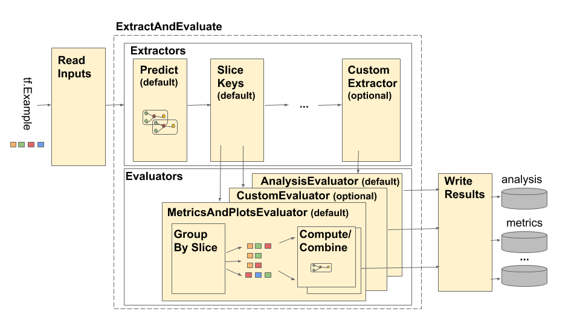

Tensorflow Model Analysis Architecture¶
Overview¶
The TensorFlow Model Analysis (TFMA) pipeline is depicted as follows:

The pipeline is made up of four main components:
- Read Inputs
- Extraction
- Evaluation
- Write Results
These components make use of two primary types: tfma.Extracts and
tfma.evaluators.Evaluation. The type tfma.Extracts represents data that is
extracted during pipeline processing and may correspond to one or more examples
for the model. tfma.evaluators.Evaluation represents the output from
evaluating the extracts at various points during the process of extraction. In
order to provide a flexible API, these types are just dicts where the keys are
defined (reserved for use) by different implementations. The types are defined
as follows:
# Extracts represent data extracted during pipeline processing.
# For example, the PredictExtractor stores the data for the
# features, labels, and predictions under the keys "features",
# "labels", and "predictions".
Extracts = Dict[Text, Any]
# Evaluation represents the output from evaluating extracts at
# particular point in the pipeline. The evaluation outputs are
# keyed by their associated output type. For example, the metric / plot
# dictionaries from evaluating metrics and plots will be stored under
# "metrics" and "plots" respectively.
Evaluation = Dict[Text, beam.pvalue.PCollection]
Note that tfma.Extracts are never written out directly they must always go
through an evaluator to produce a tfma.evaluators.Evaluation that is then
written out. Also note that tfma.Extracts are dicts that are stored in a
beam.pvalue.PCollection (i.e. beam.PTransforms take as input
beam.pvalue.PCollection[tfma.Extracts]) whereas a tfma.evaluators.Evaluation
is a dict whose values are beam.pvalue.PCollections (i.e. beam.PTransforms
take the dict itself as the argument for the beam.value.PCollection input). In
other words the tfma.evaluators.Evaluation is used at pipeline construction
time, but the tfma.Extracts are used at pipeline runtime.
Read Inputs¶
The ReadInputs stage is made up of a transform that takes raw inputs
(tf.train.Example, CSV, ...) and converts them into extracts. Today the extracts
are represented as raw input bytes stored under tfma.INPUT_KEY, however the
extracts can be in any form that is compatible with the extraction pipeline --
meaning that it creates tfma.Extracts as output, and that those extracts are
compatible with downstream extractors. It is up to the different extractors to
clearly document what they require.
Extraction¶
The extraction process is a list of beam.PTransforms that are run in series.
The extractors take tfma.Extracts as input and return tfma.Extracts as
output. The proto-typical extractor is the tfma.extractors.PredictExtractor
which uses the input extract produced by the read inputs transform and runs it
through a model to produce predictions extracts. Customized extractors can be
inserted at any point provided their transforms conform to the tfma.Extracts
in and tfma.Extracts out API. An extractor is defined as follows:
# An Extractor is a PTransform that takes Extracts as input and returns
# Extracts as output. A typical example is a PredictExtractor that receives
# an 'input' placeholder for input and adds additional 'predictions' extracts.
Extractor = NamedTuple('Extractor', [
('stage_name', Text),
('ptransform', beam.PTransform)]) # Extracts -> Extracts
InputExtractor¶
The tfma.extractors.InputExtractor is used to extract raw features, raw
labels, and raw example weights from tf.train.Example records for using in
metrics slicing and computations. By default the values are stored under the
extract keys features, labels, and example_weights respectively.
Single-output model labels and example weights are stored directly as
np.ndarray values. Multi-output model labels and example weights are stored as
dicts of np.ndarray values (keyed by output name). If multi-model evaluation
is performed the labels and example weights will be further embedded within
another dict (keyed by model name).
PredictExtractor¶
The tfma.extractors.PredictExtractor runs model predictions and stores
them under the key predictions in the tfma.Extracts dict. Single-output
model predictions are stored directly as the predicted output values.
Multi-output model predictions are stored as a dict of output values (keyed by
output name). If multi-model evaluation is performed the prediction will be
further embedded within another dict (keyed by model name). The actual output
value used depends on the model (e.g. TF estimator's return outputs in the form
of a dict whereas keras returns np.ndarray values).
SliceKeyExtractor¶
The tfma.extractors.SliceKeyExtractor uses the slicing spec to determine which
slices apply to each example input based on the extracted features and adds the
coresponding slicing values to the extracts for later use by the evaluators.
Evaluation¶
Evaluation is the process of taking an extract and evaluating it. While it is common to perform evaluation at the end of the extraction pipeline, there are use-cases that require evaluation earlier in the extraction process. As such evaluators are associated with the extractors whose output they should be evaluated against. An evaluator is defined as follows:
# An evaluator is a PTransform that takes Extracts as input and
# produces an Evaluation as output. A typical example of an evaluator
# is the MetricsAndPlotsEvaluator that takes the 'features', 'labels',
# and 'predictions' extracts from the PredictExtractor and evaluates
# them using post export metrics to produce metrics and plots dictionaries.
Evaluator = NamedTuple('Evaluator', [
('stage_name', Text),
('run_after', Text), # Extractor.stage_name
('ptransform', beam.PTransform)]) # Extracts -> Evaluation
Notice that an evaluator is a beam.PTransform that takes tfma.Extracts as
inputs. There is nothing stopping an implementation from performing additional
transformations on the extracts as part of the evaluation process. Unlike
extractors that must return a tfma.Extracts dict, there are no restrictions on
the types of outputs an evaluator can produce though most evaluators also return
a dict (e.g. of metric names and values).
MetricsAndPlotsEvaluator¶
The tfma.evaluators.MetricsAndPlotsEvaluator takes features, labels, and
predictions as input, runs them through tfma.slicer.FanoutSlices to group
them by slices, and then performs metrics and plots computations. It produces
outputs in the form of dictionaries of metrics and plots keys and values (these
are later converted to serialized protos for output by
tfma.writers.MetricsAndPlotsWriter).
Write Results¶
The WriteResults stage is where the evaluation output gets written out to
disk. WriteResults uses writers to write out the data based on the output keys.
For example, an tfma.evaluators.Evaluation may contain keys for metrics and
plots. These would then be associated with the metrics and plots dictionaries
called 'metrics' and 'plots'. The writers specify how to write out each file:
# A writer is a PTransform that takes evaluation output as input and
# serializes the associated PCollections of data to a sink.
Writer = NamedTuple('Writer', [
('stage_name', Text),
('ptransform', beam.PTransform)]) # Evaluation -> PDone
MetricsAndPlotsWriter¶
We provide a tfma.writers.MetricsAndPlotsWriter that converts the metrics and
plots dictionaries to serialized protos and writes them to disk.
If you wish to use a different serialization format, you can create a custom
writer and use that instead. Since the tfma.evaluators.Evaluation passed to
the writers contains the output for all of the evaluators combined, a
tfma.writers.Write helper transform is provided that writers can use in their
ptransform implementations to select the appropriate beam.PCollections based
on an output key (see below for an example).
Customization¶
The tfma.run_model_analysis method takes extractors, evaluators, and
writers arguments for customing the extractors, evaluators, and writers used
by the pipeline. If no arguments are provided then tfma.default_extractors,
tfma.default_evaluators, and tfma.default_writers are used by default.
Custom Extractors¶
To create a custom extractor, create a tfma.extractors.Extractor type that
wraps a beam.PTransform taking tfma.Extracts as input and returning
tfma.Extracts as output. Examples of extractors are available under
tfma.extractors.
Custom Evaluators¶
To create a custom evaluator, create a tfma.evaluators.Evaluator type that
wraps a beam.PTransform taking tfma.Extracts as input and returning
tfma.evaluators.Evaluation as output. A very basic evaluator might just take
the incoming tfma.Extracts and output them for storing in a table. This is
exactly what the tfma.evaluators.AnalysisTableEvaluator does. A more
complicated evaluator might perform additional processing and data aggregation.
See the tfma.evaluators.MetricsAndPlotsEvaluator as an example.
Note that the tfma.evaluators.MetricsAndPlotsEvaluator itself can be
customized to support custom metrics (see metrics for more
details).
Custom Writers¶
To create a custom writer, create a tfma.writers.Writer type that wraps a
beam.PTransform taking tfma.evaluators.Evaluation as input and returning
beam.pvalue.PDone as output. The following is a basic example of a writer for
writing out TFRecords containing metrics:
tfma.writers.Writer(
stage_name='WriteTFRecord(%s)' % tfma.METRICS_KEY,
ptransform=tfma.writers.Write(
key=tfma.METRICS_KEY,
ptransform=beam.io.WriteToTFRecord(file_path_prefix=output_file))
A writer's inputs depend on the output of the associated evaluator. For the
above example, the output is a serialized proto produced by the
tfma.evaluators.MetricsAndPlotsEvaluator. A writer for the
tfma.evaluators.AnalysisTableEvaluator would be responsible for writing out a
beam.pvalue.PCollection of tfma.Extracts.
Note that a writer is associated with the output of an evaluator via the output
key used (e.g. tfma.METRICS_KEY, tfma.ANALYSIS_KEY, etc).
Step by Step Example¶
The following is an example of the steps involved in the extraction and
evaluation pipeline when both the tfma.evaluators.MetricsAndPlotsEvaluator and
tfma.evaluators.AnalysisTableEvaluator are used:
run_model_analysis(
...
extractors=[
tfma.extractors.InputExtractor(...),
tfma.extractors.PredictExtractor(...),
tfma.extractors.SliceKeyExtrator(...)
],
evaluators=[
tfma.evaluators.MetricsAndPlotsEvaluator(...),
tfma.evaluators.AnalysisTableEvaluator(...)
])
ReadInputs
ExtractAndEvaluate
tfma.extractors.InputExtractor
# In: ReadInputs Extracts
# Out:
Extracts {
'input': bytes # CSV, Proto, ...
'features': tensor_like # Raw features
'labels': tensor_like # Labels
'example_weights': tensor_like # Example weights
}
tfma.extractors.PredictExtractor
# In: InputExtractor Extracts
# Out:
Extracts {
'input': bytes # CSV, Proto, ...
'features': tensor_like # Raw features
'labels': tensor_like # Labels
'example_weights': tensor_like # Example weights
'predictions': tensor_like # Predictions
}
tfma.extractors.SliceKeyExtractor
# In: PredictExtractor Extracts
# Out:
Extracts {
'features': tensor_like # Raw features
'labels': tensor_like # Labels
'example_weights': tensor_like # Example weights
'predictions': tensor_like # Predictions
'slice_key': Tuple[bytes...] # Slice
}
tfma.evaluators.MetricsAndPlotsEvaluator(run_after:SLICE_KEY_EXTRACTOR_STAGE_NAME)
# In: SliceKeyExtractor Extracts
# Out:
Evaluation {
'metrics': PCollection[Tuple[slicer.SliceKeyType, Dict[Text, Any]]] # Tuples of (slice key, dictionary from metric key to metric values)
'plots': PCollection[Tuple[slicer.SliceKeyType, Dict[Text, Any]]] # Tuples of (slice key, dictionary from plot key to plot values)
}
tfma.evaluators.AnalysisTableEvaluator(run_after:LAST_EXTRACTOR_STAGE_NAME)
# In: SliceKeyExtractor Extracts
# Out:
Evaluation {
'analysis': PCollection[Extracts] # Final Extracts
}
WriteResults
# In:
Evaluation {
'metrics': PCollection[Tuple[slicer.SliceKeyType, Dict[Text, Any]]] # Tuples of (slice key, dictionary from metric key to metric values)
'plots': PCollection[Tuple[slicer.SliceKeyType, Dict[Text, Any]]] # Tuples of (slice key, dictionary from plot key to plot values)
'analysis': PCollection[Extracts] # Final Extracts
}
# Out: metrics, plots, and analysis files